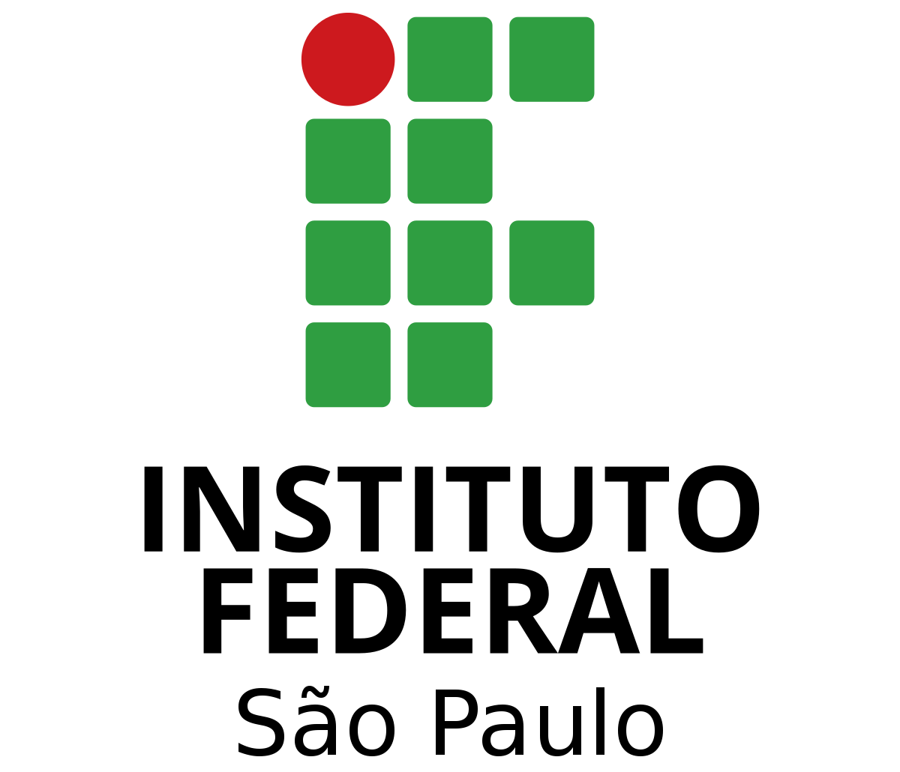
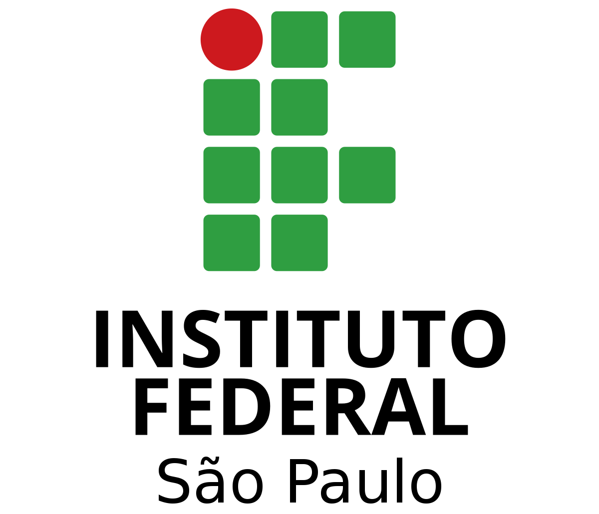

Quem sou eu?

Minha Vida Pessoal
Sou um jovem de 19 anos, atualmente estudando Ciência da Computação. Gosto muito da computação em geral, com foco na programação. Atualmente me interesso pelas áreas de Análise de Dados e Desenvolvimento de Software, porém, adoraria me aventurar em qualquer área da Computação. Hoje em dia trabalho como aprendiz em TI
Gostos
- Ler livros de Ficção
- Jogar jogos (em específico, mundo aberto)
- Escutar música
- Computação
- Exatas
 
